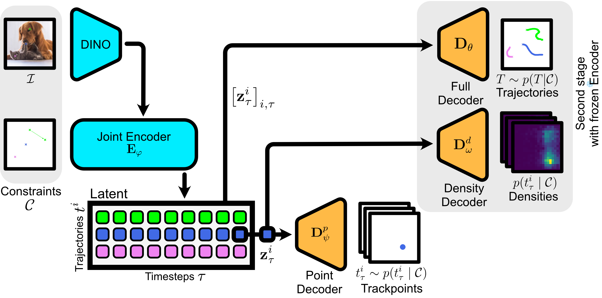
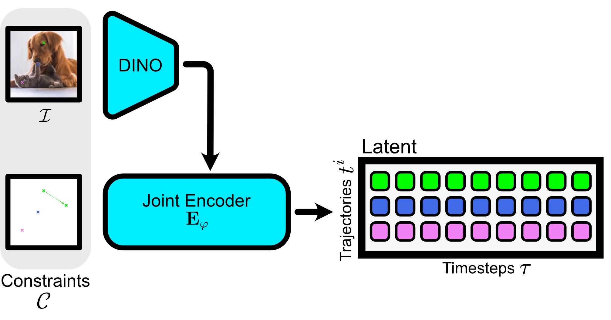
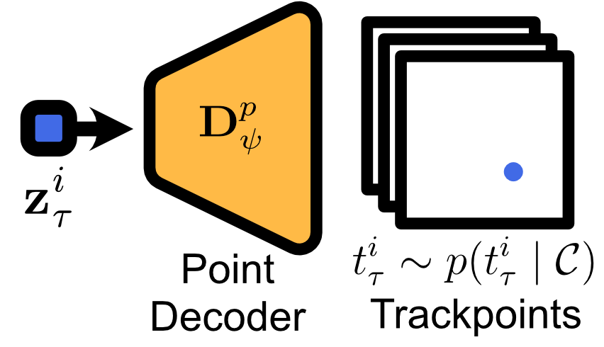
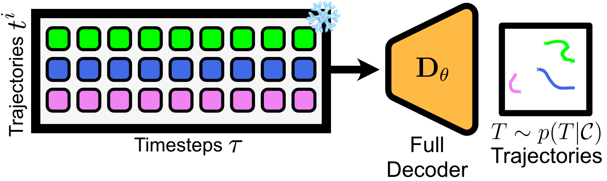
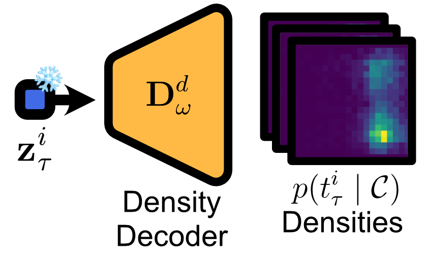
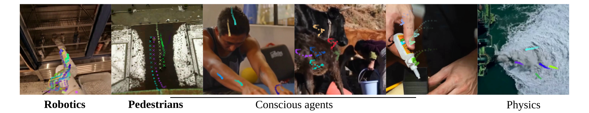
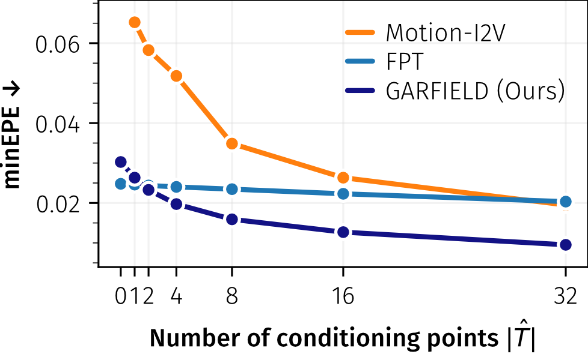
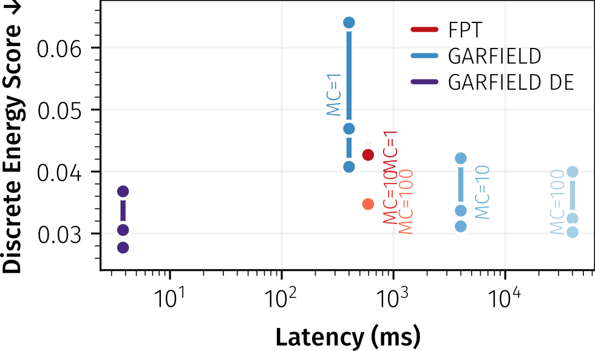
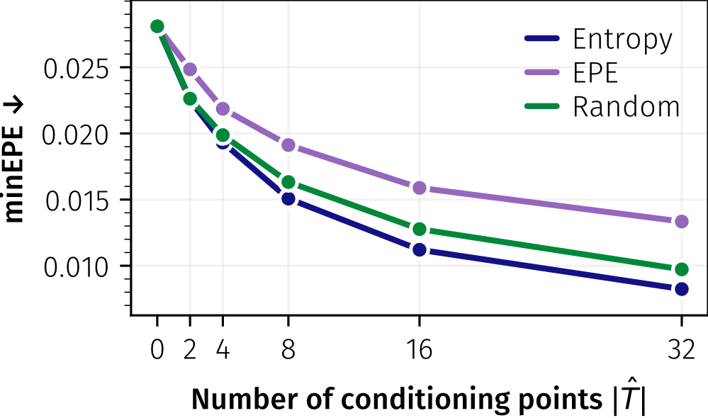
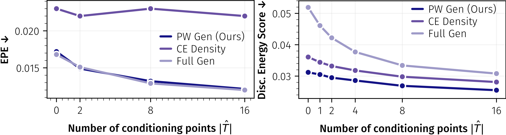

Schrödinger's Cat: Given the scene context as an image and a set of spatio-temporally sparse constraints or goals (×), our method encodes the space of possible motions and can decode heatmaps directly without expensive MC sampling.
TL;DR
- Possibility spaces: GARFIELD models future scene kinematics as a distribution over potential trajectories instead of predicting a single outcome.
- Structured uncertainty: Spatio-temporal latents localize uncertainty to specific scene elements and timesteps.
- Sparse control: Adding (sub-)goal constraints progressively collapses the space of plausible futures with minimal user input.
- Instant density estimation: The deterministic density decoder enables exploration of spatio-temporally localized uncertainty in a single ViT forward pass.
- Fast planning: GARFIELD enables 97× faster motion planning than video models and >100x faster density estimation than Monte-Carlo sampling with motion generators.
Abstract
Predicting how a scene may evolve from partial observations requires reasoning about multiple possible futures rather than committing to a single trajectory. Existing approaches either generate appearance-dominated video predictions or sample a small number of trajectories without explicitly modeling the distribution of possible motion. We introduce Goal Aware Representations of Future kInEmatic Latent Distributions (GARFIELD), a probabilistic model of scene kinematics that learns a structured spatio-temporal latent representation of the distribution over possible futures given an image and optional spatio-temporally sparse constraints. The same latent representation enables both joint sampling of all trajectories and direct access to the underlying motion distribution through an efficient deterministic density decoder. As a result, uncertainty about future motion can be localized to specific scene elements and timesteps and progressively refined through additional constraints. Experiments demonstrate strong motion planning performance competitive with large video generation models while sampling trajectories 97× faster. Our method further estimates motion densities two orders of magnitude faster than Monte-Carlo sampling from motion generation models, enabling interactive exploration and uncertainty-aware planning.
Method

GARFIELD represents future scene kinematics as localized motion distributions. Given an initial image and optional sparse constraints, a joint encoder produces spatio-temporal latents for scene elements over time. These latents encode uncertainty about where each element may move, and separate decoders expose that uncertainty as point samples, coherent trajectory rollouts, or probability heatmaps.




Results

Our approach is able to plan realistic motion for conscious agents and inanimate objects, which we quantitatively evaluate in applications such as robotics and pedestrian trajectory prediction.
GARFIELD achieves the best motion planning accuracy across EPE, PCK@1%, and FDE while remaining text-free and goal-conditionable. It is also substantially faster than video generation baselines, reaching 0.40s latency compared to 39s for LTX and 178s for CogVideoX.
| Method | Text Free | Num. Goals | EPE ↓ | PCK ↑ @10% | PCK ↑ @1% | FDE ↓ | Latency ↓ [s] | |
|---|---|---|---|---|---|---|---|---|
| video | CogVideoX | No | n/a | 0.027 | 0.952 | 0.466 | 0.032 | 178 |
| LTX | No | n/a | 0.025 | 0.960 | 0.464 | 0.033 | 39 | |
| explicit motion | Motion-I2V | No | 4 | 0.055 | 0.864 | 0.150 | 0.060 | 13.2 |
| 16 | 0.033 | 0.957 | 0.263 | 0.037 | ||||
| Track2Act | Yes | n/a | 0.041 | 0.931 | 0.091 | 0.046 | 4.10 | |
| FPT | Yes | 4 | 0.029 | 0.936 | 0.493 | 0.035 | 0.60 | |
| 16 | 0.026 | 0.943 | 0.523 | 0.032 | ||||
| GARFIELD (Ours) | Yes | 4 | 0.020 | 0.973 | 0.544 | 0.026 | 0.40 | |
| 16 | 0.013 | 0.989 | 0.666 | 0.017 | ||||




BibTeX
@inproceedings{phan2026schroedingerscat,
title = {Schr{\"o}dinger's Cat: Probabilistic Representation and Prediction of Potential Scene Kinematics},
author = {Timy Phan and Jannik Wiese and Bj{\"o}rn Ommer},
booktitle = {Proceedings of the European Conference on Computer Vision (ECCV)},
year = {2026}
}